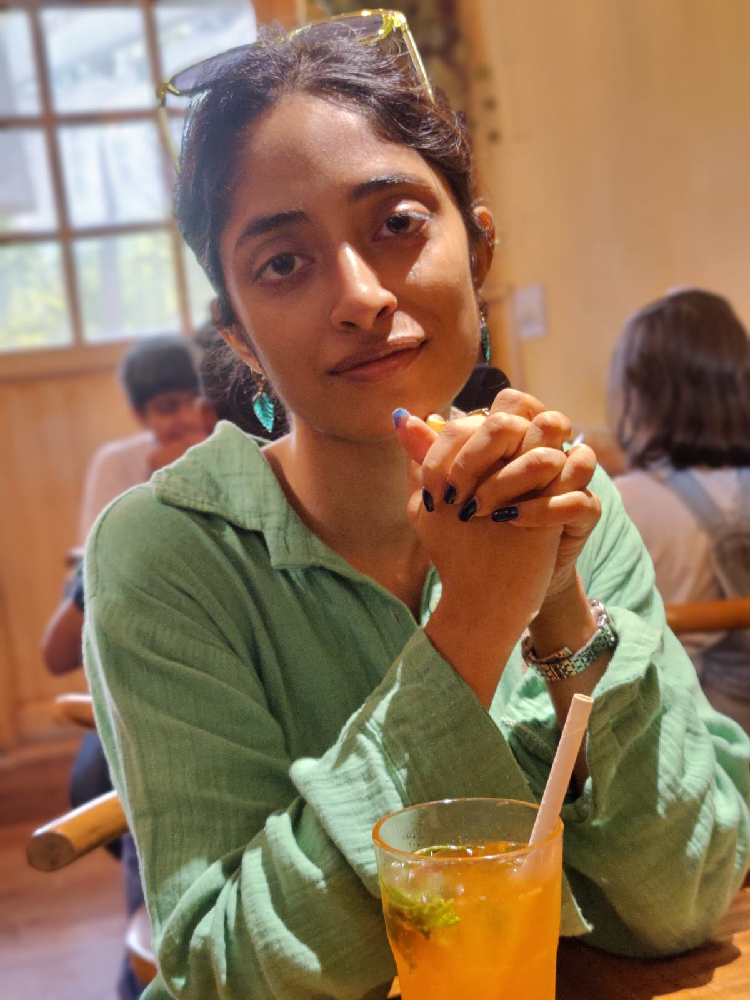

About me
I'm Nayana (pronounced /najəna/), and I really like minimal personal websites.
I am a doctoral candidate working with Prof. Samar Husain at the Psycholinguistics Lab, housed in the Linguistics Unit at IIT-Delhi.
As a psycholinguist, my broad interests lie in the area of sentence processing in SOV languages. I am currently working on exploring the interaction of predictive processing and morphological complexity in agglutinating languages such as Malayalam using behavioural and eye-tracking experiments, alongside corpus-based methods. I have also worked with morphologically complex languages such as Bangla and Mundari, and sparser ones like Hindi and Urdu.
If you would like to chat about my work, please mail me at nayana [dot] raj [at] hss [dot] iitd [dot] ac [dot] in. I also do enjoy fretting about the many aspectual forms in Malayalam, so if you work on anything aspect-adjacent in your language, I'd love to compare notes as well.

2026 Updates
- April: Our abstract has been accepted at the fourth Workshop on Eye Movements and the Assessment of Reading Comprehension in Koblenz, detailing a cross-linguistic eye-tracking corpus (Bangla, Malayalam, Hindi and Urdu) that Bristi, Karuna, Uzma and I have been building, where we're comparing the effects of script complexity, morphology and other metrics.
2025 Updates
- December: I was awarded the Prof. Chandrasekhar Pammi Award for my talk 'The Temporal Dynamics of Visual Word Recognition' at ACCS 2025.
- October: Our abstract, titled 'The Temporal Dynamics of Visual Word Recognition', has been selected for an oral presentation at ACCS 12, happening in CBCS, Allahabad.
- September: Our work, titled 'Cross-linguistic Issues in the Processing of Morphological Complexity', has been selected for a talk at SAFAL 2025 at the University of Colorado Boulder. Pranab and I will also be presenting a poster titled, 'Determinants of Subject drop in Hindi: Evidence from Complementary Corpora'.
- June: We're at EEL 2025 in Kanpur, where we're implementing Bayesian models and querying treebanks.
- June: Suvrojit's and my work, titled 'Cross-linguistic Differences in Morphological Priming across Morphologically Complex Languages: Evidence from Malayalam and Bangla', has been selected for a talk at X-PPL 2025 at the University of Zurich.
- April: Paper accepted at CogSci 2025, titled 'Leveraging Prediction to Investigate the Mental Lexicon: Evidence from an Agglutinating Language'. Look out for our poster in San Francisco if you're attending!
- January: Presented a talk titled 'What can predictive processing tell us about the mental lexicon? Insights from Malayalam' at SCONLI 2025 in Delhi.